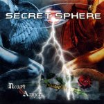

|
|
||
Secret Sphere : Heart and Anger (2005) |
|

http://www.secretsphere.com |
1. Endless 1:53 |
8.6/10 |
|
Heart and Anger es el cuarto álbum de estudio del grupo italiano Secret Sphere, donde no han escatimado en medios, incluyendo hasta una orquesta en la grabación, para conseguir un resultado que nos haga olvidar su muy flojo disco anterior (Scent of Human Desire). La orquesta abre el disco con la obligatoria intro, "Endless", interesante y acompañada por una voz clásica femenina que deja paso al intratable doble bombo de "Where the sea ends", un tema de power metal bastante directo, variado, con coros y un buen estribillo. "First snake" arranca con un importante protagonismo de los teclados, siempre sobre una batería espesa y presente que lidera los cambios de ritmo y cimenta una interesante melodía. Más directo aún es el tema "Loud & Raw", de batería y guitarras demoledoras, ritmo de metal cañero y estribillo minimalista y pegadizo. Un aire progresivo y electrónico establecen los teclados en "Dance with the devil", sobre los que se hila un tema melódico y acompañado de coros. El doble bombo retoma el mando en "Set me free", un tema variado, con partes más crudas y otras más elaboradas, acompañadas de coros y teclados. Cierta esencia gótica te inunda al escuchar el inicio de "I won't say a word", un tema de ritmo moderado, casi una balada, con una base guitarrera suficiente pero con un protagonismo innegable de los teclados. De nuevo el doble bombo surge imparable para perfilar el ritmo de "Lights on", una canción pomposa con algunos coros realmente espectaculares, y un fantástico y melodioso estribillo. "Leonardo da Vinci" empieza suave pero cuando irrumpen las guitarras y la batería impone su ley todo apunta hacia un power metal cañero con algunos pasajes memorables. "You still remain" es un balada que no está mal, con la intensidad justa y variaciones, como una parte de diálogo con una voz femenina, y un buen solo de guitarra, que evitan que se haga larga. Tras "Bad blood", otra pieza directa aunque de tempo moderado y que no aporta demasiado al conjunto, y "No reason why", otro medio tiempo más melódico con estribillo aceptable, el disco concluye con "Faster than the storm", una buena canción épica, rápida, con coros, superposiciones de voces y que habría sido perfecta con un estribillo con algo más de gancho. Tras un tercer disco muy alejado del power metal sinfónico de los dos primeros, y que mucha gente había calificado como hard rock, la banda ha espoleado su vena más metalera y el resultado ha valido la pena. La batería gobierna, el doble bombo apenas descansa, los solos de guitarra reclaman protagonismo y los teclados acompañan. Como debe ser en un grupo que está editando sus trabajos bajo el sello Nuclear Blast. Por lo demás, la orquesta se nota poco y posiblemente se la podrían haber ahorrado, pero al menos no la han dejado eclipsar a la banda. Un nuevo disco de Secret Sphere que cualquier fan del power metal puede disfrutar. |
||
- Crítica escrita por Rubén Béjar - |
||